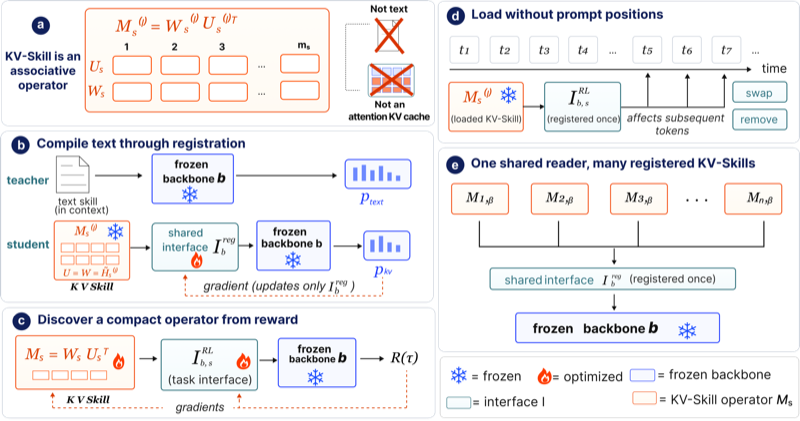
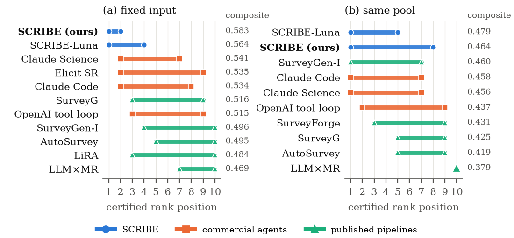

Selected Publications & Preprints


Research
Learning and adaptation
How should knowledge be represented so that models can acquire, reuse, and adapt it efficiently?
KV-Skill. Repeatedly sending the same task instructions prompted a deeper question: could task knowledge have a reusable representation outside both the prompt and the model weights? I proposed an external-operator formulation and developed its reward-learning paths. Our ablations examine what carries the skill: with the interface fixed, a text-derived operator retains nearly all its benefit after compression to one task-aligned direction per injection layer on the tasks studied, while matched random directions fail. KV-Skill also supports Cypher generation in PanKGraph. A follow-up to KV-Skill is in preparation.
Latent reasoning. I investigated moving redundant reasoning steps into latent space. On a 1.5B model, an offline signal that distinguished filler steps (AUC ≈ 0.72) did not produce an effective RL routing policy: it skipped only 0.1% of steps. This exposed a gap between identifying redundant computation and learning when to replace it. code
I am interested in how learned representations can support skill composition, transfer to new tasks, and selective use of explicit and latent computation.
Reasoning and intelligent agents
How do training signals shape reasoning, and which decisions should receive credit for success?
Credit assignment in GRPO. At CASIA, I found that aggregate Pass@1 could increase while accuracy fell within every reasoning-depth bin in the runs analyzed. This motivated evaluating the distribution of reasoning behavior alongside the headline score. I developed STAGE-GRPO to stratify advantages by estimated prompt difficulty; on MATH-500 with R1-Distill-Qwen-1.5B, it removed the observed depth-wise degradation and reached 86.8% Pass@1 (+2.2 percentage points over GRPO). A prefix-contrastive follow-up targets decision-critical tokens using correct and incorrect rollouts with the same prefix. code
SCRIBE. A final literature-review score provides little guidance about which intermediate decisions to improve. I designed SCRIBE's agent and training pipeline around rubric-grounded, multi-dimensional rewards at stage boundaries, turning the project's compositional evaluation framework into supervision for those decisions. The system is deployed in GLKB for literature-review writing.
I want to understand when local learning signals improve long-horizon behavior, and how to train agents whose reasoning remains effective as tasks become more complex.
Reliable AI and scientific discovery
How can we measure genuine progress and build systems that use scientific evidence reliably?
Evaluation as a research question. In What Can a Leaderboard Certify?, we study how unequal evidence and inputs can undermine agent rankings. This connects to a recurring concern in my work: deciding what a result actually establishes, then using that understanding to design better learning signals and systems.
Biomedical evidence synthesis. I built GLKB's Investigate workflow around retrieved evidence, verbatim-grounded answers, and a mechanical faithfulness check before claims enter the output. In our evaluation, fact-level completeness rose from 0.442 to 0.645 and entity coverage from 0.676 to 0.823, at 55% lower inference cost, with no fabricated citations observed. This complements my work on SCRIBE and my role leading GLKB's technical development. site
Spatiotemporal forecasting. At the Chinese Academy of Agricultural Sciences, I developed a climate-state encoder, latent dynamics model, and probabilistic decoder for drought forecasting. I pretrained the encoder on unlabeled ERA5 fields and designed multi-step training for one- and six-month forecasts. Evaluation explicitly separates forecast skill from persistence and partially observed target windows.
I am interested in learning and evaluation methods that remain useful as evidence, data distributions, and scientific tasks change.
Additional Manuscripts
- Agricultural technology gap affects climate change adaptation and mitigation based on patent data. Enke Liu*, Xiang Zhang*, Peng Pan*, Yuqing Wang, Buchun Liu, Liwei Zhang, Xiaorong Mei. Under review at npj Climate and Atmospheric Science.
- An insight into the technological landscape and competitive situation of the biodegradable PBAT industry based on multidimensional patent analysis. Liwei Zhang, Xiang Zhang, Jing Gao, Shuxia Lei, Changrong Yan, Enke Liu. Under review at IEEE Transactions on Engineering Management.